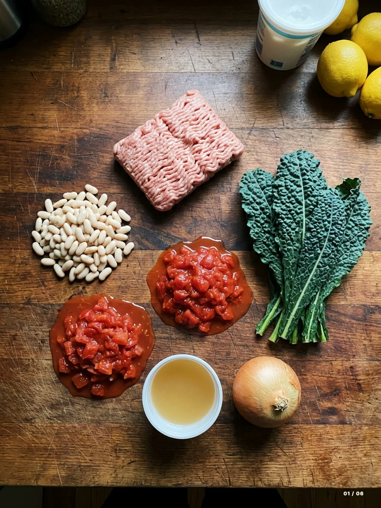
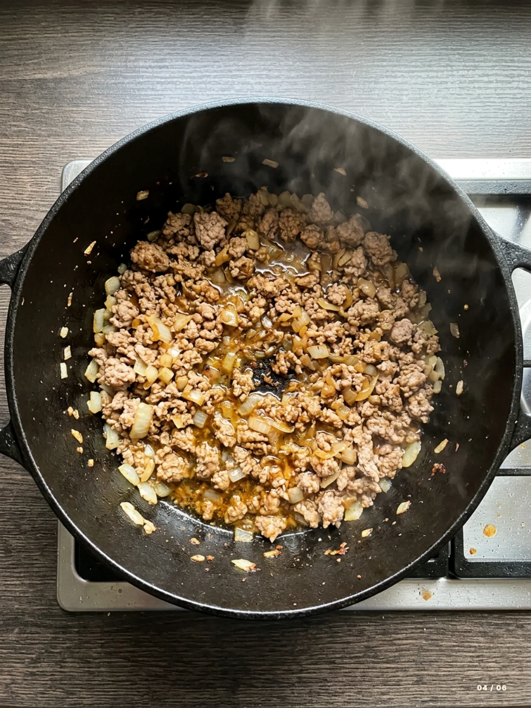
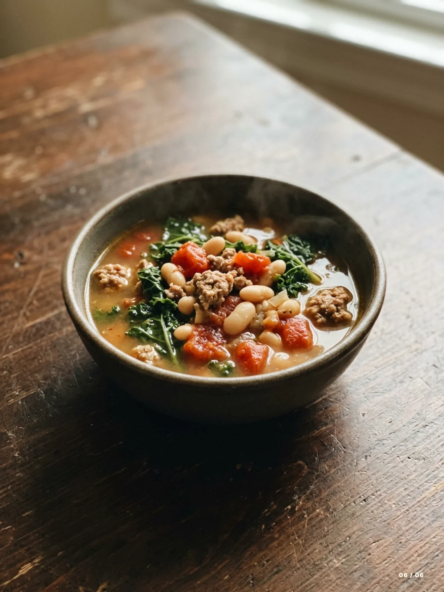

Scan what you have
Point Nibble at your ingredients, type them, or name the dish you want.
Dinner, rescued
Nibble turns what is already in your kitchen into practical meals—and keeps you in control from the first photo to the final timer.

How it works
Point Nibble at your ingredients, type them, or name the dish you want.

Confirm the ingredients, then set 30 minutes, one pot, and your servings.

Brown the turkey, simmer the beans and tomatoes, then finish with kale.
Built for real kitchens
Nibble works with tonight's reality. If your ingredients support one worthwhile dinner, that is what you get.
The quiet details
No filler recipes just to hit a number.
One step at a time, with timers where they matter.
No account. Saved recipes and preferences stay on your device.